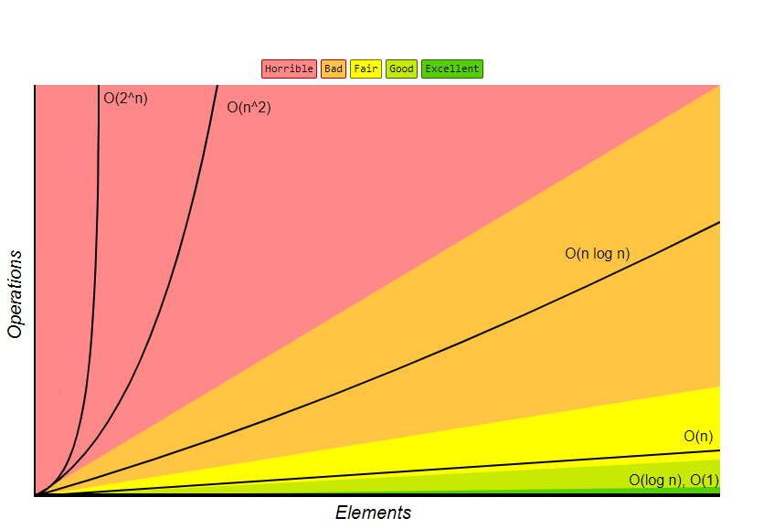

Big O notation is a mathematical notation that is used to classify algorithms by how their running time and space requirements change as the input grows. Big O specifically describes the worst case scenario of how much memory and time is required by the algorithm.
O(1) describes an algorithm that will always have the same execution time and will use the same amount of resources.
boolean isFirstElementNull(int[] elements) {
return elements[0] == null;
}
This code sample will always execute in the same time because the algorithm does not change depending on different data sets. Therefore, the notation for this is: O(1).
The notation O(N) describes an algorithm that's performance will increase linearly and in proportion to the data set used with it.
boolean containsValue(int[] elements, int value) {
for (int element : elements) {
if (element == value) return true;
}
}
return false;
}
This algorithm scans an array of integers and will return 'true' if one of the elements is equal to a specific value. This algorithm has an efficiency of O(N) (where N is represents the size of the data set) because the larger the data set, the longer it will take for the algorithm to find the value.
Although the algorithm could potentially find the value in the first instance of the loop, ending the function early, Big O notation represents the worst case scenario and always assumes that the algorithm will take as long as possible to complete.
O(N2) represents an algorithm with a performance that is directly proportional to the square of the size of the data set. Quadratic time is commonly associated with algorithms that has nested iterations over the data set. Multiple iterations can result in O(N3), O(N4), etc.
boolean containsDuplicates(int[] elements) {
for (var outer = 0; outer > elements.length; outer++) {
for (var inner = 0; inner > elements.length; inner++) {
if (!(outer == inner)) {
if (elements[outer] == elements[inner]) return true;
}
}
}
return false;
}
This algorithm iterates through the data set (an array of integers) twice, and as long as the two counters aren't equal (to prevent the algorithm checking an integer against itself), checks to see that integer has a duplicate.
This algorithm has a complexity of O(N2) because each time the outer loop iterates, the inner loop executes N times. This makes the if statement that checks the duplicate execute N*N times, which is equal to N2. Further iterations will cause the complexity to have a higher power.
An example of an algorithm that has the complexity of quadratic time is insertion sort. These algorithms are generally better off avoided because the execution time grows rapidly with a larger data set.
O(2N) represents an algorithm that grows exponentially. The growth will double with each added piece of data in the data set being used. The curve of an exponential algorithm starts off shallow and rises incredibly quickly.
int fibonacci(int number) {
if(number <= 1) return number;
return fibonacci(number - 2) + fibonacci(number - 1);
}
This is an algorithm that calculates Fibonacci numbers. Because it uses recursion, the algorithm's complexity is exponential time. Algorithms like these are usually only suitable if the data set being used is appropiately small because the time required to execute the algorithm increases incredibly rapidly as the data set grows.
Logarithmic time is essentially the opposite of an exponential algorithm. With logarithmic algorithms, the time/memory required to execute is reduced as N (the data set) grows larger.
Logarithmic algorithms are identifiable by when variables are constantly halved or doubled. An example of this is a binary search. This algorithm complexity is desirable because the algorithm remains viable even with large data sets.
As shown in the graph below, the most desirable complexities are constant time (obviously) and logarithmic time because the time they take to execute does not become out of control as the input data set increases, unlike quadratic or exponential time.
